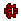
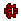

弓
出自多玩《怪物獵人P3》數據庫
 武器：太刀 - 大劍 - 片手劍 - 斬擊斧 - 雙刀 - 錘子 - 長槍 - 銃槍 - 狩獵笛 - 弓 - 輕弩 - 重弩
武器：太刀 - 大劍 - 片手劍 - 斬擊斧 - 雙刀 - 錘子 - 長槍 - 銃槍 - 狩獵笛 - 弓 - 輕弩 - 重弩
 |
|
註：
1，蓄力攻擊 綠色的數值為[裝填數UP]技能發動后才可以使用
2，裝著瓶 綠色為可裝著，紅色為弓自身自帶強化屬性
3，裝著瓶縮寫：強 —— 強擊瓶，毒 —— 毒瓶，麻 —— 麻痹瓶，睡 —— 睡眠瓶，接 —— 接擊瓶，染 —— 染色瓶，減 —— 減氣瓶
4，武器名稱前的小圖示 
  分別代表稀有度1-7
 分別代表稀有度1-7
武器派生
古結云派生系
| 武器 | 稀有度 | 攻擊 | 附加效果 | 曲射 | 蓄力攻擊&裝著瓶 | 孔 | 等級 |
| ■古結云弓派生 | |||||||
| 古結云弓 | 1 | 50 | - | 放散型 |
連射1 連射1 連射2 擴散2 強-毒-麻-睡-接-染-減 | - - - | 下位 |
| ┗ 結云弓 | 1 | 70 | - | 放散型 |
連射1 貫通2 連射2 擴散3 強-毒-麻-睡-接-染-減 | - - - | 下位 |
| ┣ 結云弓改 | 2 | 100 | - | 放散型 |
連射1 貫通2 連射3 擴散3 強-毒-麻-睡-接-染-減 | - - - | 下位 |
| ┃ ┣ 毒狗左輪弓Ⅰ | 2 | 120 | - | 爆裂型 |
連射2 貫通2 連射3 擴散3 強-毒-麻-睡-接-染-減 | - - - | 下位 |
| ┃ ┃ ┗ 毒狗左輪弓Ⅱ | 2 | 140 | - | 爆裂型 |
連射2 貫通2 連射3 擴散3 強-毒-麻-睡-接-染-減 | - - - | 下位 |
| ┃ ┃ ┗ 毒狗左輪弓Ⅲ | 3 | 150 | - | 爆裂型 |
連射2 貫通3 連射3 擴散4 強-毒-麻-睡-接-染-減 | - - - | 下位 |
| ┃ ┃ ┗ 污濁左輪弓 | 4 | 210 | - | 爆裂型 |
連射2 貫通3 連射4 擴散4 強-毒-麻-睡-接-染-減 | - - - | 上位 |
| ┃ ┗ 彩鳥喇叭 | 2 | 120 | 火16 | 放散型 |
擴散1 擴散2 擴散2 擴散3 強-毒-麻-睡-接-染-減 | O - - | 下位 |
| ┃ ┗ 彩鳥大喇叭 | 3 | 130 | 火22 | 放散型 |
擴散2 擴散2 擴散3 擴散4 強-毒-麻-睡-接-染-減 | O - - | 下位 |
| ┃ ┗ 彩鳥超大喇叭 | 4 | 150 | 火27 | 放散型 |
擴散2 擴散3 擴散4 擴散4 強-毒-麻-睡-接-染-減 | O - - | 上位 |
| ┃ ┗ 心靈破壞者
| 5 | 160 | 火33 | 放散型 |
擴散3 擴散3 擴散4 擴散5 強-毒-麻-睡-接-染-減 | O - - | 上位 |
| ┗ 水齒輪弓Ⅰ | 2 | 90 | 水12 | 放散型 |
擴散1 貫通2 貫通2 貫通3 強-毒-麻-睡-接-染-減 | - - - | 下位 |
| ┗ 水齒輪弓Ⅱ | 2 | 120 | 水18 | 放散型 |
擴散2 貫通2 貫通3 貫通3 強-毒-麻-睡-接-染-減 | - - - | 下位 |
| ┗ 水齒輪弓Ⅲ | 3 | 140 | 水25 | 放散型 |
擴散2 貫通2 貫通3 貫通4 強-毒-麻-睡-接-染-減 | - - - | 下位 |
| ┗ 紫色齒輪弓Ⅰ | 4 | 170 | 水26 | 放散型 |
擴散2 貫通2 貫通3 擴散4 強-毒-麻-睡-接-染-減 | O - - | 上位 |
| ┗ 紫色齒輪弓Ⅱ
| 5 | 180 | 水28 | 放散型 |
擴散3 貫通3 貫通3 擴散4 強-毒-麻-睡-接-染-減 | O - - | 上位 |
| ┗ 紫水桃弓
| 6 | 190 | 水30 | 放散型 |
擴散3 貫通3 貫通4 擴散4 強-毒-麻-睡-接-染-減 | O - - | 上位 |
獵弓Ⅰ派生系
| 武器 | 稀有度 | 攻擊 | 附加效果 | 曲射 | 蓄力攻擊&裝著瓶 | 孔 | 等級 |
| ■獵弓Ⅰ派生 | |||||||
| 獵弓Ⅰ | 1 | 80 | 防禦力+5 | 放散型 |
連射1 連射2 連射2 貫通3 強-毒-麻-睡-接-染-減 | - - - | 下位 |
| ┗ 獵弓Ⅱ | 1 | 100 | 防禦力+8 | 放散型 |
連射1 連射2 連射3 貫通3 強-毒-麻-睡-接-染-減 | - - - | 下位 |
| ┗ 獵弓Ⅲ | 2 | 130 | 防禦力+10 | 放散型 |
連射2 連射2 連射3 貫通3 強-毒-麻-睡-接-染-減 | - - - | 下位 |
| ┣ 毀滅女王Ⅰ | 2 | 160 | - | 集中型 |
貫通2 擴散2 擴散3 連射3 強-毒-麻-睡-接-染-減 | O - - | 下位 |
| ┃ ┗ 毀滅女王Ⅱ | 3 | 170 | - | 集中型 |
貫通2 擴散2 擴散3 連射3 強-毒-麻-睡-接-染-減 | O - - | 下位 |
| ┃ ┗ 毀滅女王Ⅲ
| 5 | 220 | - | 集中型 |
貫通2 擴散3 擴散4 連射4 強-毒-麻-睡-接-染-減 | O - - | 上位 |
| ┃ ┗ 射月女神 | 7 | 230 | 火20 | 集中型 |
貫通2 擴散3 擴散4 連射4 強-毒-麻-睡-接-染-減 | O - - | 上位 |
| ┣ 64式連裝弓Ⅰ | 2 | 140 | 水16 | 放散型 |
連射2 連射2 連射3 貫通3 強-毒-麻-睡-接-染-減 | - - - | 下位 |
| ┃ ┗ 64式連裝弓Ⅱ | 3 | 150 | 水20 | 放散型 |
連射2 連射3 連射3 貫通4 強-毒-麻-睡-接-染-減 | - - - | 下位 |
| ┃ ┗ 64式連裝弓Ⅲ
| 5 | 180 | 水24 | 放散型 |
連射2 連射3 連射3 貫通4 強-毒-麻-睡-接-染-減 | - - - | 上位 |
| ┃ ┗ 破城鉆擊弓
| 6 | 200 | 水29 | 放散型 |
連射3 連射3 連射3 貫通4 強-毒-麻-睡-接-染-減 | - - - | 上位 |
| ┗ 力量獵弓Ⅰ | 4 | 210 | 防禦力+16 | 放散型 |
連射2 連射3 連射3 貫通3 強-毒-麻-睡-接-染-減 | O O - | 上位 |
| ┗ 力量獵弓Ⅱ
| 5 | 220 | 防禦力+20 | 放散型 |
連射2 連射3 連射4 貫通4 強-毒-麻-睡-接-染-減 | O O - | 上位 |
飛甲蟲弓派生系
| 武器 | 稀有度 | 攻擊 | 附加效果 | 曲射 | 蓄力攻擊&裝著瓶 | 孔 | 等級 |
| ■飛甲蟲弓派生 | |||||||
| 飛甲蟲弓 | 1 | 90 | 會心率 5% | 集中型 |
擴散1 擴散2 貫通2 連射3 強-毒-麻-睡-接-染-減 | O - - | 下位 |
| ┗ 飛蟲堅弓 | 2 | 110 | 會心率 5% | 集中型 |
擴散1 擴散2 貫通3 連射3 強-毒-麻-睡-接-染-減 | O - - | 下位 |
| ┣ 飛甲蟲弓火 | 2 | 120 | 會心率 5% 火12 | 集中型 |
貫通1 連射2 貫通3 連射3 強-毒-麻-睡-接-染-減 | O - - | 下位 |
| ┃ ┗ 飛蟲堅弓火 | 3 | 130 | 會心率 5% 火24 | 集中型 |
貫通2 連射2 貫通3 連射3 強-毒-麻-睡-接-染-減 | O - - | 下位 |
| ┃ ┗ 飛蟲強弓火紅 | 4 | 170 | 會心率 5% 火35 | 集中型 |
貫通2 連射3 貫通3 連射4 強-毒-麻-睡-接-染-減 | O O - | 上位 |
| ┣ 飛甲蟲弓冰 | 2 | 120 | 會心率 5% 冰10 | 集中型 |
擴散2 貫通2 貫通3 擴散3 強-毒-麻-睡-接-染-減 | O - - | 下位 |
| ┃ ┗ 飛蟲堅弓冰 | 3 | 130 | 會心率 5% 冰20 | 集中型 |
擴散2 貫通2 貫通3 擴散3 強-毒-麻-睡-接-染-減 | O - - | 下位 |
| ┃ ┗ 飛蟲強弓冰藍 | 4 | 170 | 會心率 5% 冰29 | 集中型 |
擴散2 貫通3 貫通3 擴散4 強-毒-麻-睡-接-染-減 | O O - | 上位 |
| ┗ 飛甲蟲弓雷 | 2 | 120 | 會心率 5% 雷8 | 集中型 |
擴散2 擴散2 連射3 貫通3 強-毒-麻-睡-接-染-減 | O - - | 下位 |
| ┗ 飛蟲堅弓雷 | 3 | 130 | 會心率 5% 雷16 | 集中型 |
擴散2 擴散3 連射3 貫通3 強-毒-麻-睡-接-染-減 | O - - | 下位 |
| ┗ 飛蟲強弓雷光 | 4 | 170 | 會心率 5% 雷24 | 集中型 |
擴散2 擴散3 連射3 貫通4 強-毒-麻-睡-接-染-減 | O O - | 上位 |
迅影弓Ⅰ派生系
| 武器 | 稀有度 | 攻擊 | 附加效果 | 曲射 | 蓄力攻擊&裝著瓶 | 孔 | 等級 |
| ■迅影弓Ⅰ派生 | |||||||
| 迅影弓Ⅰ | 3 | 150 | 會心率 40% | 放散型 |
連射3 貫通2 貫通3 貫通4 強-毒-麻-睡-接-染-減 | O - - | 下位 |
| ┗ 迅影弓Ⅱ | 4 | 190 | 會心率 40% | 放散型 |
連射3 貫通3 貫通3 貫通4 強-毒-麻-睡-接-染-減 | O - - | 上位 |
| ┣ 暗夜弓【影縫】
| 6 | 220 | 會心率 40% | 放散型 |
連射3 貫通3 貫通4 貫通4 強-毒-麻-睡-接-染-減 | O O - | 上位 |
| ┗ 綠迅弓
| 5 | 210 | 會心率 20% | 集中型 |
擴散2 擴散2 貫通2 貫通3 強-毒-麻-睡-接-染-減 | O O - | 上位 |
| ┗ 突風弓【里影縫】
| 6 | 230 | 會心率 20% | 集中型 |
擴散2 擴散3 貫通3 貫通4 強-毒-麻-睡-接-染-減 | O O - | 上位 |
冰錐發射者Ⅰ派生系
| 武器 | 稀有度 | 攻擊 | 附加效果 | 曲射 | 蓄力攻擊&裝著瓶 | 孔 | 等級 |
| ■冰錐發射者Ⅰ派生 | |||||||
| 冰錐發射者Ⅰ | 3 | 140 | 會心率 20% 冰24 | 放散型 |
連射2 貫通2 連射3 擴散4 強-毒-麻-睡-接-染-減 | O - - | 下位 |
| ┣ 冰錐發射者Ⅱ
| 5 | 170 | 會心率 20% 冰23 | 放散型 |
連射2 貫通3 連射3 擴散4 強-毒-麻-睡-接-染-減 | O - - | 上位 |
| ┃ ┗ 伊蒂爾弓
| 6 | 180 | 會心率 30% 冰28 | 放散型 |
連射2 貫通3 連射4 擴散4 強-毒-麻-睡-接-染-減 | O - - | 上位 |
| ┗ 迅敏軍弓
| 5 | 210 | 會心率 10% | 集中型 |
貫通2 貫通3 連射3 連射4 強-毒-麻-睡-接-染-減 | O - - | 上位 |
| ┗ 佛里德之弓
| 6 | 230 | 會心率 15% | 集中型 |
貫通2 貫通3 連射3 連射4 強-毒-麻-睡-接-染-減 | O - - | 上位 |
強化獵弓派生系
| 武器 | 稀有度 | 攻擊 | 附加效果 | 曲射 | 蓄力攻擊&裝著瓶 | 孔 | 等級 |
| ■強化獵弓派生 | |||||||
| 強化獵弓 | 2 | 130 | - | 爆裂型 |
擴散1 貫通2 連射3 貫通4 強-毒-麻-睡-接-染-減 | O - - | 下位 |
| ┗ 結晶狩獵堅弓 | 2 | 150 | - | 爆裂型 |
擴散2 貫通2 連射3 貫通4 強-毒-麻-睡-接-染-減 | O - - | 下位 |
| ┗ 破魔大弓 | 3 | 180 | - | 爆裂型 |
擴散2 貫通2 連射3 貫通4 強-毒-麻-睡-接-染-減 | O O - | 下位 |
| ┗ 悠時之弓
| 5 | 230 | - | 放散型 |
擴散2 貫通3 連射4 貫通4 強-毒-麻-睡-接-染-減 | O O - | 上位 |
爆錘震弓Ⅰ派生系
| 武器 | 稀有度 | 攻擊 | 附加效果 | 曲射 | 蓄力攻擊&裝著瓶 | 孔 | 等級 |
| ■爆錘震弓Ⅰ派生 | |||||||
| 爆錘震弓Ⅰ | 3 | 170 | 防禦力+10 火10 | 爆裂型 |
貫通1 連射1 連射2 貫通2 強-毒-麻-睡-接-染-減 | - - - | 下位 |
| ┗ 爆錘震弓Ⅱ | 3 | 190 | 防禦力+12 火18 | 爆裂型 |
貫通1 連射1 連射2 貫通2 強-毒-麻-睡-接-染-減 | - - - | 下位 |
| ┗ 爆錘震弓Ⅲ
| 5 | 220 | 防禦力+16 火22 | 爆裂型 |
貫通1 連射1 連射2 貫通2 強-毒-麻-睡-接-染-減 | - - - | 上位 |
| ┗ 重弓巨槌
| 6 | 240 | 防禦力+24 火25 | 爆裂型 |
貫通1 連射1 連射2 貫通2 強-毒-麻-睡-接-染-減 | - - - | 上位 |
王弓圓雷Ⅰ派生系
| 武器 | 稀有度 | 攻擊 | 附加效果 | 曲射 | 蓄力攻擊&裝著瓶 | 孔 | 等級 |
| ■王弓圓雷Ⅰ派生 | |||||||
| 王弓圓雷Ⅰ | 3 | 150 | 雷23 | 放散型 |
連射2 連射3 貫通3 連射4 強-毒-麻-睡-接-染-減 | O - - | 下位 |
| ┗ 王弓圓雷Ⅱ
| 5 | 180 | 雷27 | 放散型 |
連射2 連射3 貫通3 連射4 強-毒-麻-睡-接-染-減 | O - - | 上位 |
| ┗ 王牙弓【稚雷】
| 6 | 200 | 雷31 | 放散型 |
連射2 連射3 貫通4 連射4 強-毒-麻-睡-接-染-減 | O - - | 上位 |
角骨獵弓Ⅰ派生系
| 武器 | 稀有度 | 攻擊 | 附加效果 | 曲射 | 蓄力攻擊&裝著瓶 | 孔 | 等級 |
| ■角骨獵弓Ⅰ派生 | |||||||
| 角骨獵弓Ⅰ | 3 | 190 | 防禦力+6 會心率 -5% | 集中型 |
貫通1 貫通1 貫通3 貫通4 強-毒-麻-睡-接-染-減 | - - - | 下位 |
| ┗ 角骨獵弓Ⅱ
| 6 | 250 | 防禦力+12 會心率 -10% | 集中型 |
貫通1 貫通1 貫通3 貫通4 強-毒-麻-睡-接-染-減 | - - - | 上位 |
| ┗ 角王弓·泰坦巨角
| 6 | 270 | 防禦力+16 會心率 -10% | 集中型 |
貫通1 貫通1 貫通3 貫通5 強-毒-麻-睡-接-染-減 | - - - | 上位 |
竹取弓派生系
| 武器 | 稀有度 | 攻擊 | 附加效果 | 曲射 | 蓄力攻擊&裝著瓶 | 孔 | 等級 |
| ■竹取弓派生 | |||||||
| 竹取弓 | 2 | 70 | 水20 | 集中型 |
擴散2 連射1 連射2 連射3 強-毒-麻-睡-接-染-減 | - - - | 下位 |
| ┗ 竹取弓【翁】 | 3 | 70 | 水27 | 集中型 |
擴散3 連射1 連射2 連射3 強-毒-麻-睡-接-染-減 | - - - | 下位 |
| ┗ 竹取弓【伽具夜】
| 5 | 70 | 水40 | 集中型 |
擴散4 連射1 連射2 連射3 強-毒-麻-睡-接-染-減 | - - - | 上位 |
漠浪弓派生系
| 武器 | 稀有度 | 攻擊 | 附加效果 | 曲射 | 蓄力攻擊&裝著瓶 | 孔 | 等級 |
| ■漠浪弓派生 | |||||||
| 漠浪弓 | 3 | 150 | 龍23 | 放散型 |
連射2 貫通3 擴散4 貫通4 強-毒-麻-睡-接-染-減 | O - - | 下位 |
| ┗ 漠浪弓【砂紋】
| 6 | 180 | 龍25 | 放散型 |
連射2 貫通3 擴散4 貫通4 強-毒-麻-睡-接-染-減 | O - - | 上位 |
| ┗ 漠浪弓【豐禳】 | 7 | 200 | 龍28 | 放散型 |
連射3 貫通3 擴散4 貫通4 強-毒-麻-睡-接-染-減 | O - - | 上位 |
真結云派生系
| 武器 | 稀有度 | 攻擊 | 附加效果 | 曲射 | 蓄力攻擊&裝著瓶 | 孔 | 等級 |
| ■真結云派生 | |||||||
| 真結云弓 | 3 | 170 | - | 放散型 |
連射1 貫通2 連射3 擴散3 強-毒-麻-睡-接-染-減 | O O - | 下位 |
| ┗ 靈弓結云【破軍】 | 4 | 220 | - | 放散型 |
連射1 貫通2 連射3 擴散4 強-毒-麻-睡-接-染-減 | O O - | 上位 |
鹿角彈弓派生系
| 武器 | 稀有度 | 攻擊 | 附加效果 | 曲射 | 蓄力攻擊&裝著瓶 | 孔 | 等級 |
| ■鹿角彈弓派生 | |||||||
| 鹿角彈弓 | 3 | 170 | - | 爆裂型 |
擴散2 擴散3 連射3 連射4 強-毒-麻-睡-接-染-減 | O O - | 下位 |
| ┗ 鹿角剛彈弓
| 5 | 210 | - | 爆裂型 |
擴散2 擴散3 連射4 連射4 強-毒-麻-睡-接-染-減 | O O O | 上位 |
轟龍弓派生系
| 武器 | 稀有度 | 攻擊 | 附加效果 | 曲射 | 蓄力攻擊&裝著瓶 | 孔 | 等級 |
| ■轟龍弓派生 | |||||||
| 轟龍弓 | 3 | 180 | 會心率 -20% | 爆裂型 |
連射2 連射3 連射4 擴散4 強-毒-麻-睡-接-染-減 | - - - | 下位 |
| ┗ 轟弓【虎鬚】
| 6 | 240 | 會心率 -20% | 爆裂型 |
連射3 連射4 連射5 擴散4 強-毒-麻-睡-接-染-減 | - - - | 上位 |
兇弓【小夜嵐】派生系
| 武器 | 稀有度 | 攻擊 | 附加效果 | 曲射 | 蓄力攻擊&裝著瓶 | 孔 | 等級 |
| ■兇弓【小夜嵐】派生 | |||||||
| 兇弓【小夜嵐】 | 7 | 250 | 會心率 -10% 水11 | 集中型 |
連射2 連射3 擴散4 貫通4 強-毒-麻-睡-接-染-減 | O - - | 上位 |
霸弓·逆天轟鳴派生系
| 武器 | 稀有度 | 攻擊 | 附加效果 | 曲射 | 蓄力攻擊&裝著瓶 | 孔 | 等級 |
| ■霸弓·逆天轟鳴派生 | |||||||
| 霸弓·逆天轟鳴 | 7 | 210 | 會心率 30% 龍23 | 爆裂型 |
擴散2 貫通3 連射4 - 強-毒-麻-睡-接-染-減 | - - - | 上位 |
崩弓·滅空寒星派生系
| 武器 | 稀有度 | 攻擊 | 附加效果 | 曲射 | 蓄力攻擊&裝著瓶 | 孔 | 等級 |
| ■崩弓·滅空寒星派生 | |||||||
| 崩弓·滅空寒星 | 7 | 270 | 會心率 -30% 冰9 | 放散型 |
擴散2 連射3 貫通4 擴散4 強-毒-麻-睡-接-染-減 | - - - | 上位 |
弓攻略心得
圖文
| · 【弓-曲射研究帖】弓-曲射效能掃盲。給力！！ | 2010.12.07 |
| · 萬化在神，自在由心——弓武器進階心得 | 2010.12.16 |
| · 弓裝的選擇和應用（從下位到上位，一應俱全） | 2010.12.16 |
| · 弓雷狼+心得（附視訊） | 2010.12.20 |
| · 坑跌的視訊心得 貓火夜嵐弓黑轟9分25 | 2010.12.18 |
| · | >>更多 |
視訊
| · 【視訊】貓火夜嵐弓黑轟9分25（坑跌的心得） | 2010.12.18 |
| · 【視訊】弓雷狼+心得 | 2010.12.20 |
| · | >>更多 |
武器：太刀 - 大劍 - 片手劍 - 斬擊斧 - 雙刀 - 錘子 - 長槍 - 銃槍 - 狩獵笛 - 弓 - 輕弩 - 重弩